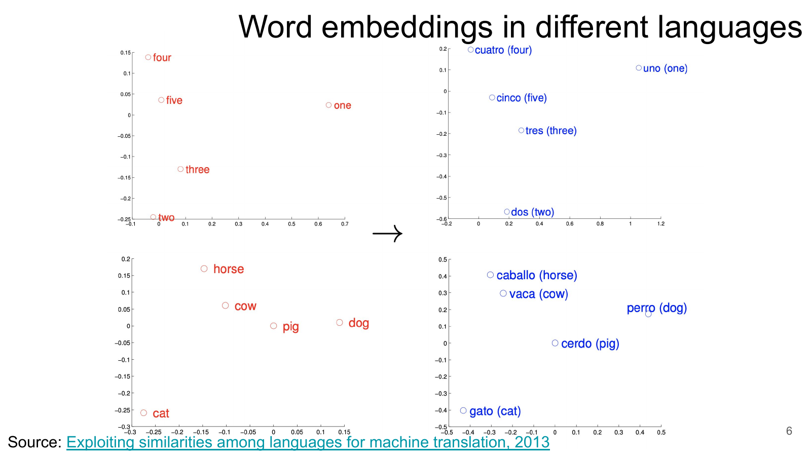
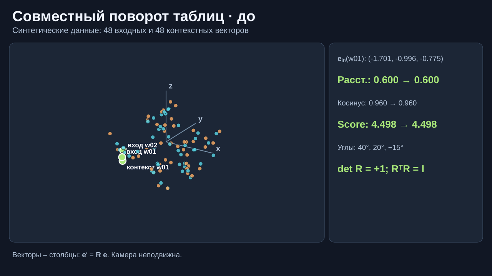
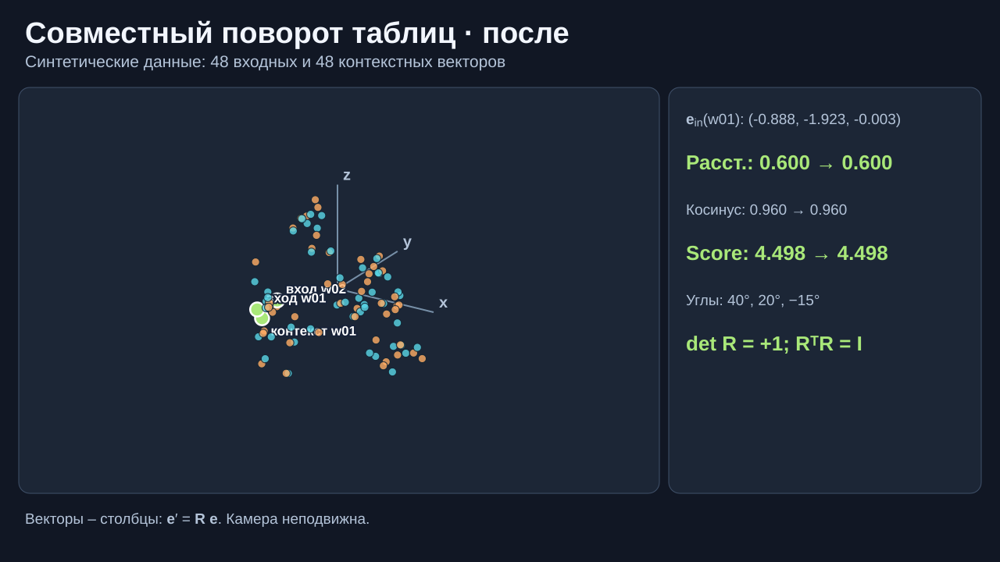
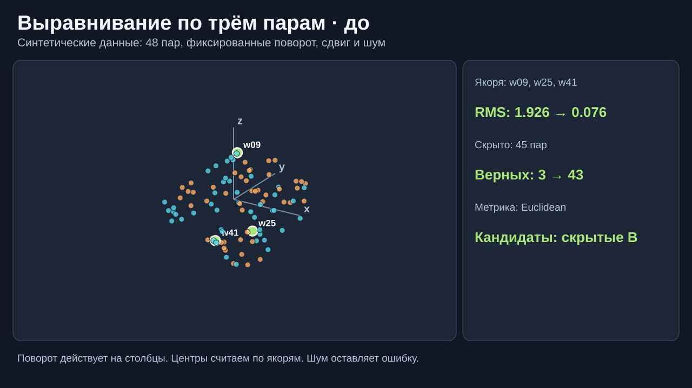
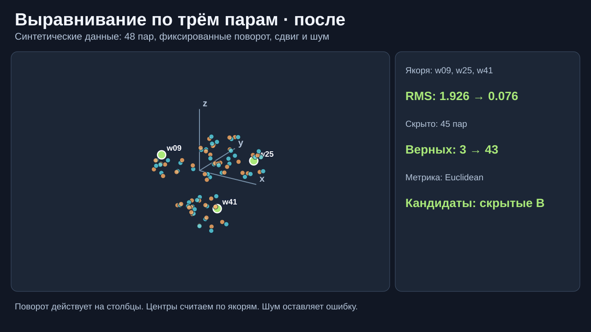
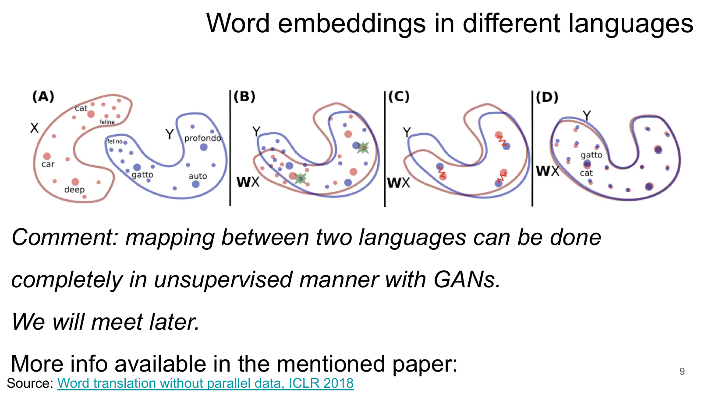
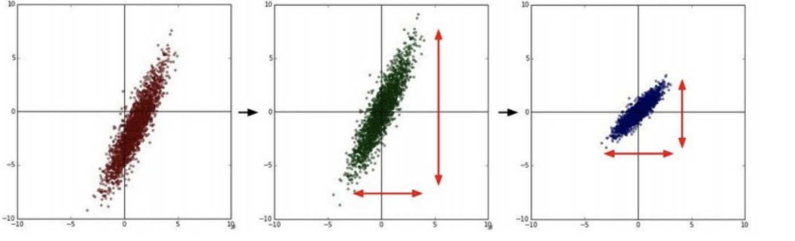
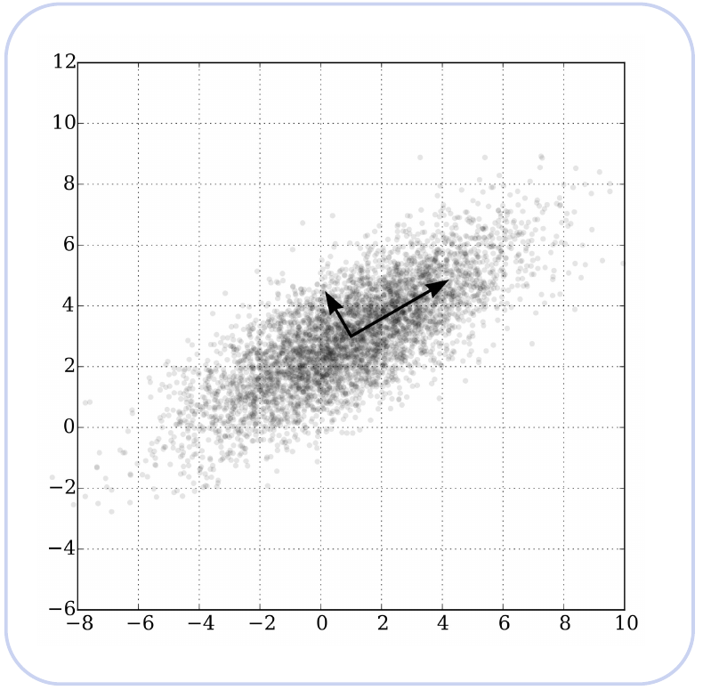
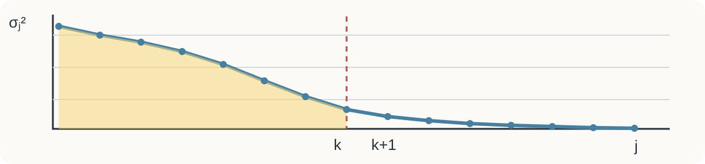
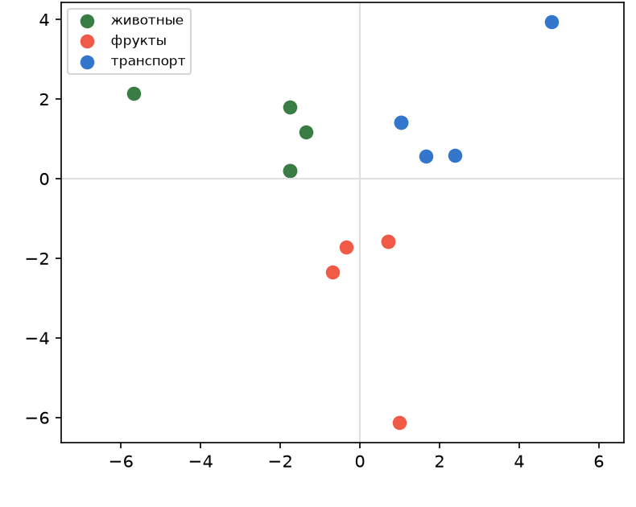

Повороты, SVD и метод главных компонент (PCA)
Что меняет матрица?Что сохраняет поворот?Как сжать данные?
Повороты, SVD и метод главных компонент (PCA)
… кот ест корм …
Из текста берём пару: центр «кот» → контекст «ест».
Обучение меняет входную и контекстную таблицы, чтобы предсказывать соседние слова.
После обучения строка входной таблицы служит вектором слова. Score пары ещё не вероятность и не косинус.
Вектор слова – столбец.
Сравнение слов:
Ближайший сосед зависит от метрики и набора слов-кандидатов.
Нормировка убирает масштаб; близость по косинусу зависит от угла.
Для нулевого вектора косинус не определён. Близость слов проверяем на обученной таблице и выбранном словаре.

Есть два набора векторов слов и несколько известных пар перевода.
Давайте подберём одну матрицу по известным парам, а затем применим её к новому слову.
Одинаковые длины
Длины стали 2 и 1/2
Матрица изменила длины и расстояния. Если хотим сохранить соседства слов, ограничим отображение.
При одинаковой размерности можно искать поворот и перенос центра: .
Поворот сохраняет расстояния и косинусы; перенос центра сохраняет расстояния, но может изменить косинусы. Это допущение модели: языки не обязаны совпасть после поворота.


Каждый вектор-столбец умножаем на одну матрицу поворота.
В учебном облаке 48 точек на каждой стороне. Эти три пары известны заранее.
Остальные 45 соответствий скрыты при подгонке и служат только для проверки.


На скрытой паре w01 ↔ b01 косинус в учебном облаке: 0,176 → 0,9999 после выравнивания.
На интерактиве проверка 45 скрытых пар считается по евклидову расстоянию.
В предыдущем опыте известны 3–5 пар слов. Это разметка, пусть и небольшая.
Прокруст по якорям решает задачу с известными соответствиями.

Исходного двуязычного словаря нет. Conneau et al. (ICLR 2018), Fig. 1
Мы только что совмещали два пространства, оставляя размерность прежней.
Теперь возьмём одну таблицу слов. Какие две оси сохранят больше разброса?
Так появляется PCA. Затем SVD даст вычислительный способ найти эти оси.
n слов · d координат у каждого
Выбранные строки входной таблицы образуют .

Центрирование нужно для обычной PCA. Делить каждый признак на его стандартное отклонение — отдельное решение.

Если оставить только одну координату, какую прямую выбрать?
Длины проекций считаем от центра облака.
Схема из старой лекции; это не измеренные эмбеддинги слов.
Возьмём вектор из уже центрированного набора и ось под 45°.
Точку заменили одной координатой; восстановление потеряло отклонение (1, −1).
Столбцы и ортонормальны; содержит ; — координаты строк в осях .
Проверка первой строки: ½(4,4) + ½(2,−2) = (3,1).
При квадрате нормы Фробениуса это лучшее приближение ранга 1.
Оси выбираются на обучающей части; те же оси и среднее применяются к новым строкам.

Учебная схема спектра; сингулярные числа упорядочены: , где .
В разобранной матрице k = 1 даёт 32 / 40 = 80% дисперсии и ошибку 8.

15 слов, учебный корпус, Skip-gram с полным softmax; входная таблица .
Среднее абсолютное изменение косинуса по 105 парам:
«кот»: исходный ближайший сосед — «лиса» (0,9965). После сжатия 2→1 шесть слов делят косинус 1, включая «поезд».
Учебный контрпример: метка .
Первая ось сохраняет 400 / 404 ≈ 99% дисперсии. После проекции пары строк становятся одинаковыми, хотя их метки различны.
PCA минимизирует ошибку восстановления; качество конкретной задачи проверяем отдельно.
Матрицы содержат центрированные строки известных пар.
Для нового вектора-столбца: .
Задача: прогнозировать цену квартиры по табличным признакам.
Та же квартира, другие единицы расстояния:
PCA на ковариации чувствителен к масштабу столбцов. Центрирование обязательно; деление на стандартное отклонение – отдельное решение.
В учебной таблице жилая площадь = 0,7 × общей.
Здесь один столбец точно определяется другим. Модель может распределять вес между ними по-разному.
При увеличении на единицу и фиксированном прогноз меняется на .
– стандартное отклонение признака j, – цели; оба считаем на train.
Для прогноза важна сумма. Пары весов и здесь дают один ответ.
Что изменится в выводе о важности каждого столбца?
| Операция | Что подбираем | По какому критерию |
|---|---|---|
| word2vec | таблицы | предсказание контекста |
| Прокруст | поворот | минимум суммы квадратов по известным парам |
| PCA | k осей в | минимум квадрата ошибки восстановления |
word2vec учится предсказывать контекст; косинус сравнивает направления полученных векторов.
Поворот сохраняет внутреннюю геометрию, но качество перевода зависит от межъязыкового соответствия.
PCA сохраняет разброс, но может изменить соседей слов и качество задачи.
Коэффициент регрессии нельзя читать без масштаба и корреляции признаков.
Сначала ставим задачу. Потом проверяем на данных, что сохранилось после преобразования.